《咸鱼之王》×《三国志幻想大陆》系统对比分析
个人独立 · 竞品分析作品
一、基础信息
| 咸鱼之王 | 三国志幻想大陆 | |
|---|---|---|
| 开发 | 阿咸工作室 | 灵犀互娱 |
| 发行 | 豪腾天佑 | 灵犀互娱 |
| 平台 | 微信小游戏 + APP（iOS / Android） | iOS / Android（全平台手游） |
| 类型 | 魔性搞怪、放置挂机、卡牌养成 | 三国题材、回合制、策略卡牌 RPG |
| 上线 | 2021 年 | 2020 年 6 月 |
| 核心成就 | 微信小游戏畅销榜常年头部；开创"魔性咸鱼 + 三国"细分赛道；验证了"小游戏 → APP"发行模式 | 长期位居国内卡牌手游收入前列；首创"无废将"养成机制成为行业标杆；全球累计用户超 4000 万；多地区版本（含韩服） |
二、核心玩法对比
2.1 核心循环
| 咸鱼之王 | 三国志幻想大陆 | |
|---|---|---|
| 循环模型 | 挂机自动战斗 → 获取养成资源 → 提升配队强度 → 挂机获取更多资源 | 获取资源 → 提升配队强度 → 自动战斗推关 / PvP → 获取更多资源 |
| 核心驱动 | 挂机收益 + 宝箱开箱 | 养成深度 + 阵容搭配 |
| 玩家操作 | 极简：上线 → 收菜 → 养成 → 下线 | 轻中度：多系统养成点击 + 阵容策略调整 |

核心循环对比
2.2 游戏目标与核心体验
| 维度 | 咸鱼之王 | 三国志幻想大陆 |
|---|---|---|
| 核心目标 | 挂机变强 | 养成收集 + 战力提升 |
| 核心体验 | 挂机收益的获得感 → 开宝箱的随机刺激 → 养成后的战力反馈 → 更高收菜效率的成长感 | 活动 / 系统产出的获得感 → 推关胜利的成就感 → 养成战力提升的满足感 → 冲榜的竞技紧张感 |
| 策略深度 | 低：布阵围绕单个强力武将构筑 | 中高：羁绊配队 + 神兵搭配 + 站位调整 |
| 典型场景 | 通勤、排队等碎片时间 | 每日固定时间段清体力、做活动 |
三、系统架构对比
| 维度 | 咸鱼之王 | 三国志幻想大陆 |
|---|---|---|
| 战斗系统 | 自动战斗，消耗火把加速 | 回合制自动战斗，轻量化，玩家不参与操作 |
| 武将 / 咸将养成 | 升级（金币 + 进阶石）、装备（精铁）、升星（碎片） | 升级（经验丹）、进阶（进阶材料）、升星（碎片 + 觉醒石）、装备四系统（强化 / 打造 / 精炼 / 铭文） |
| 养成深度 | 浅：约 4 条养成线 | 深：约 10+ 条养成线（含兵符、灵宠、神兵、战魂等） |
| 羁绊 / 阵容 | 阵营光环，围绕单核构筑 | 武将间列阵羁绊 + 普通羁绊，同阵营联动，策略维度丰富 |
| 挂机系统 | 核心系统：离线挂机推关，知识币加速 | 辅助系统：黄天秘径挂机收菜 |
| 爬塔 | 咸将塔：每层 10 关，第 10 关为战力检测器 | 黄天秘径：线性爬塔，挂机产出 |
| PVP | 竞技场：自动战斗排名 | 演武堂：每日挑战，排名结算，关键材料产出端 |
| 抽卡相关 | 宝箱系统（木 / 铜 / 金 / 铂金 / 钻石五档）+ 招募券 | 招募券 + 元宝直接抽取 |
| 图鉴 | 升星获微星，里程碑解锁抽卡资源 | 名将绘卷：升星同时提升全体上阵武将属性 |
| 商业化 | 金砖充值、月卡、VIP 特权 | 元宝充值、月卡、战令、礼包 |
| 辅助 / 减负 | 无 | 文姬助手（10 倍速 + 官方脚本）、省电模式（息屏自动刷本） |
四、养成深度对比

养成深度对比
五、设计意图对比
| 维度 | 咸鱼之王 | 三国志幻想大陆 |
|---|---|---|
| 核心资源驱动 | 挂机时长（促进在线时长） | 体力（促进日活） |
| 养成理念 | 品质固定，少数强力武将 → 引导集中资源培养 → 降低决策成本 | 无废将，所有武将可升至最高品质 → 鼓励收集养成 → 长线留存 |
| 社交与竞争 | 竞技场排名刺激付费 | 演武堂排名 + 组队讨伐 → 社交捆绑 + 竞争驱动付费 |
| 正反馈设计 | 宝箱开完 → 积分累积 → 再开一轮（连环多巴胺）；图鉴升星 + 里程碑奖励（双重正反馈） | 武将升星 → 图鉴属性提升（双重战力反馈）；多养成线并进 → 总有可追求目标 |
| 付费设计逻辑 | 低门槛 → 破圈获量 → VIP / 月卡深度变现 | 养成线丰富 → 多卡点 → 高付费深度 |
六、商业化路径对比

商业化路径对比
七、总体对比总结
| 咸鱼之王 | 三国志幻想大陆 | |
|---|---|---|
| 产品定位 | 超轻量放置卡牌，碎片化杀时间 | 中度策略卡牌 RPG，长线养成 |
| 目标用户 | 泛用户、非传统卡牌玩家、微信生态流量 | 传统卡牌 / 三国题材玩家、中度手游用户 |
| 核心壁垒 | 极低理解成本 + 魔性画风破圈 + 微信生态分发 | 无废将养成标杆 + 丰富的策略配队维度 + 成熟的商业化体系 |
| 学习价值 | 如何做减法：最小化操作但维持养成驱动力 | 如何做加法：多养成线并行但不失控；如何用羁绊系统创造策略深度 |
一句话总结：咸鱼之王是"把卡牌养成砍到只剩骨架但玩家依然上瘾"的典范， 三幻是"在卡牌框架内把养成深度与策略性做到极致"的标杆。
两者都是数值养成游戏——战力是通行证，养成是升级通行证的路径，通行证等级越高，解锁的玩法和养成维度越多。
八、对设计的启发
- 咸鱼之王的"连环正反馈"设计值得学习：宝箱 → 积分 → 再开一轮，图鉴升星 → 全队属性提升， 每一条养成线的产出都在喂养另一条线，让玩家持续处于"只差一点就能再爽一次"的状态。
- 三幻的"无废将"设计降低了玩家的收集焦虑：传统卡牌中抽到废卡 = 负体验， 三幻通过全体可升最高品质解决了这个问题，同时通过羁绊系统让"图鉴完整度"本身成为战力，双重驱动收集行为。
- 两者对"轻量化战斗"的理解一致但实现不同：咸鱼之王让战斗完全后台化，三幻保留了回合制演出但自动播放—— 共同逻辑是"这类型游戏的战斗不是操作乐趣，养成结果验证才是"。